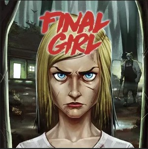

F✦FUNCIÓN T·01T·01 · Slasher · Favorito
Final Girl
La que sigue en pie cuando bajan los créditos.
Un asesino, una locación maldita y vos. Sobreviví la noche o eliminá al villano: cada caja es una película slasher distinta, del campamento al manicomio.
Jugadores1–2 jugadores
Duración30–60′
Intensidad◆◆◆◆◇ exigente
ModoCooperativo
15 películas en el archivo
Horror solitario y modular: elegís una Final Girl, un asesino y una localización, y la mesa arma una película distinta. La gracia está en gestionar cartas, tiempo y horror mientras rescatás víctimas, buscás objetos y decidís cuándo dejar de correr para enfrentar al villano.
Ideal parauna noche solo, con tensión y revancha rápida
No ideal simesas que necesitan cooperación o charla constante
Sensaciónslasher táctico, presión creciente, final cinematográfico